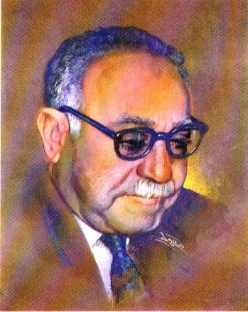

عن المؤلف
ولد أحمد حسن الزيات في قرية كفر "دميرة القديم" مركز "طلخا" محافظة الدقهلية عام (1885م)، وتوفي سنة (1968م) عن عمر يناهز 83 عامًا، وهو واحد من أكبر رجال النهضة الثقافية في مصر والعالم العربي، وهو مؤسس مجلة (الرسالة) وعضو المجامع اللغوية في القاهرة ودمشق وبغداد.
حاز على جائزة الدولة التقديرية في الآداب سنة (1381هـ / 1962م). ومن مؤلفاته: تاريخ الأدب العربي، في أصول الأدب، دفاع عن البلاغة، وحي الرسالة. ومن ترجماته عن الفرنسية: رواية "آلام فرتر" لجوته، ورواية "روفائيل" للأديب الفرنسي لامارتين.